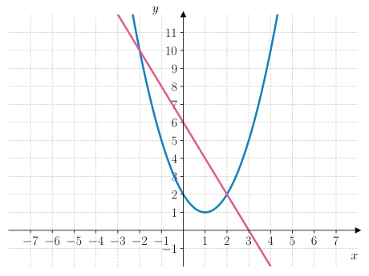
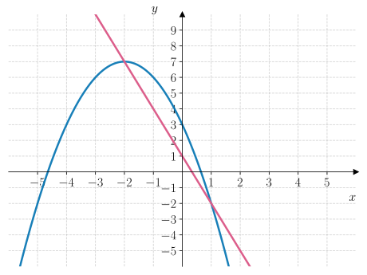
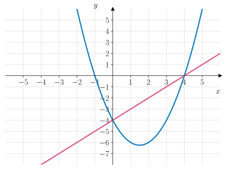
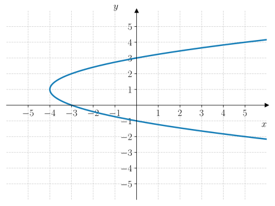

Oppgaver: Ikke-lineære likningssystemer#
Oppgave 1#
Bruk figuren til høyre til å løse likningssystemet
Vi ser fra figuren at grafene til likningene skjærer hverandre i punktene \((-1, 1)\) og \((2, 4)\). Løsningen av likningssystemet er derfor
Bruk figuren til høyre til å løse likningssystemet
Grafene til likningene skjærer hverandre i punktene \((-2, 0)\) og \((3, 10)\). Løsniingen av likningssystemet er derfor
Bruk figuren til høyre til å løse likningssystemet
Grafene skjærer hverandre i punktene \((-1, -2)\) og \((2, 7)\). Løsningen av likningssystemet er derfor
Oppgave 2#
Bruk Geogebra til å løse likningssystemene grafisk.
Et likningssystem er gitt ved
Nedenfor ser du en gif som viser hvordan man løser likningen med grafvinduet i Geogebra. Vi trykker på  (Skjæring mellom to objekt) etterfulgt av å trykke på hver graf for å finne skjæringspunktet.
(Skjæring mellom to objekt) etterfulgt av å trykke på hver graf for å finne skjæringspunktet.

Skjæringspunktene mellom de to grafene er \((4, 5)\) og \((0, -3)\) som betyr at løsningen av likningssystemet er
Vi tegner grafene til likningene i Geogebra og bruker “skjæring mellom to objekt”  for å finne skjæringspunktet mellom dem. Se figuren nedenfor:
for å finne skjæringspunktet mellom dem. Se figuren nedenfor:

Grafene skjærer hverandre i \((-3, 13)\) og \((1, 1)\). Da er løsningen av likningssystemet gitt ved
Vi tegner grafene til likningene i Geogebra og bruker “skjæring mellom to objekt”  for å finne skjæringspunktet mellom dem. Se figuren nedenfor:
for å finne skjæringspunktet mellom dem. Se figuren nedenfor:

Grafene skjærer hverandre i \((-2, 3)\) og \((4, 9)\). Da er løsningen av likningssystemet gitt ved
Vi tegner grafene til likningene i Geogebra og bruker “skjæring mellom to objekt”  for å finne skjæringspunktet mellom dem. Se figuren nedenfor:
for å finne skjæringspunktet mellom dem. Se figuren nedenfor:

Grafene skjærer hverandre i \((-1, -1)\) og \((1, 3)\). Da er løsningen av likningssystemet gitt ved
Vi tegner grafene til likningene i Geogebra og bruker “skjæring mellom to objekt”  for å finne skjæringspunktet mellom dem. Se figuren nedenfor:
for å finne skjæringspunktet mellom dem. Se figuren nedenfor:

Grafene skjærer hverandre i \((0, 1)\) og \((4, -7)\). Da er løsningen av likningssystemet gitt ved
Oppgave 3#
Løs likningssystemene algebraisk.
Vi løser likning 2 for \(y\):
Deretter setter vi inn uttrykket for \(y\) i likning 1:
Nå kan vi bruke \(abc\)-formelen for å finne verdiene for \(x\):
som gir løsningene
Hver verdi for \(x\) gir oss en verdi for \(y\). Vi bruker at \(y = x + 2\) og setter inn verdiene for \(x\). Når \(x = -1\), så får vi
Når \(x = 2\), så får vi
Dermed er løsningen av likningssystemet
Vi løser likning 2 for \(y\):
Deretter setter vi inn uttrykket for \(y\) i likning 1:
Så forenkler vi likningen så mye som mulig:
Nå kan vi bruke \(abc\)-formelen for å finne verdiene for \(x\):
som gir løsningene
Hver verdi for \(x\) gir oss en verdi for \(y\). Vi bruker at \(y = 2x + 4\) og setter inn verdiene for \(x\). Når \(x = -2\), så får vi
Når \(x = 3\), så får vi
Dermed er løsningen av likningssystemet
Vi løser likning 1 for \(y\):
Deretter setter vi inn uttrykket for \(y\) i likning 2:
Så forenkler vi likningen så mye som mulig:
Nå kan vi bruke \(abc\)-formelen for å finne verdiene for \(x\):
som gir løsningene
Hver verdi for \(x\) gir oss en verdi for \(y\). Vi bruker at \(y = 3x + 1\) og setter inn verdiene for \(x\). Når \(x = -1\), så får vi
Når \(x = 2\), så får vi
Dermed er løsningen av likningssystemet
Vi løser likning 2 for \(y\):
Deretter setter vi inn uttrykket for \(y\) i likning 1:
Så forenkler vi likningen så mye som mulig:
Vi kan faktorisere likningen med 2.kvadratsetning:
Det betyr at løsningen for \(x\) er
Den tilhørende \(y\)-verdien finner vi ved å bruke at \(y = -2x + 3\):
Dermed er løsningen av likningssystemet
Oppgave 4#
Bruk CAS til å løse likningssystemene.

Fra utskriften ser vi at løsningen av likningssystemet er

Fra utskriften ser vi at løsningen av likningssystemet er

Fra utskriften ser vi at løsningen av likningssystemet er

Fra utskriften ser vi at løsningen av likningssystemet er
Oppgave 5#
Avgjør hvilken av figurene nedenfor du kan bruke til å løse likningssystemet
Løs likningssystemet ved hjelp av riktig figur.

Figur C.
Avgjør hvilken av figurene nedenfor du kan bruke til å løse likningssystemet
Løs likningssystemet ved hjelp av riktig figur.

Figur A.
Avgjør hvilken av figurene nedenfor du kan bruke til å løse likningssystemet
Løs likningssystemet ved hjelp av riktig figur.

Figur D.
Oppgave 6#
Lag et likningssystem du kan bruke figuren nedenfor til å løse
{kind=link}

Lag et likningssystem du kan bruke figuren nedenfor til å løse
{kind=link}

Lag et likningssystem du kan bruke figuren nedenfor til å løse
{kind=link}

Oppgave 7#
Bruk CAS til å forutsi hva som skrives ut av programmene nedenfor.
Bruk CAS til å avgjøre hva som blir skrevet ut av programmet nedenfor.
Skriv inn svaret ditt og sjekk.
Bruk CAS til å avgjøre hva som blir skrevet ut av programmet nedenfor.
Skriv inn svaret ditt og sjekk.
Bruk CAS til å avgjøre hva som blir skrevet ut av programmet nedenfor.
Skriv inn svaret ditt og sjekk.
Bruk CAS til å avgjøre hva som blir skrevet ut av programmet nedenfor.
Skriv inn svaret ditt og sjekk.
Oppgave 8#
Anna har skrevet et program for å løse et likningssystem. Programmet er vist nedenfor.
1for x in range(-100, 101):
2 for y in range(-100, 101):
3 if x**2 + y**2 == 25 and x + y == 5:
4 print((x, y))
Løs likningssystemet grafisk.
Løs likningssystemet med CAS.
Løs likningssystemet algebraisk.
Oppgave 9#
Et likningssystem er gitt ved
Bestem \(k\) slik at likningssystemet har nøyaktig én løsning.
For hvilke verdier av \(k\) har likningssystemet to løsninger?
Oppgave 10#
Et likningssystem er gitt ved
Bestem \(k\) slik at likningssystemet har nøyaktig én løsning.
For hvilke verdier av \(k\) vil likningsystemet ikke ha noen løsning?
Oppgave 11#
Grafen til en andregradsfunksjon kalles for en parabel. Men en parabel må ikke være en funksjon. For at grafen skal være en funksjon, så kan det bare finnes én \(y\)-verdi for hver \(x\)-verdi. Hvis parabelen derimot ligger langs \(x\)-aksen, så har den flere \(y\)-verdier for hver \(x\)-verdi. Da er ikke grafen en funksjon, men en kurve.
I figuren nedenfor vises en slik parabel.
{kind=link}

Bestem likningen til parabelen på standardform:
Bestem likningen til parabelen på ekstremalpunktsform:
Bestem likningen til parabelen på nullpunktsform: